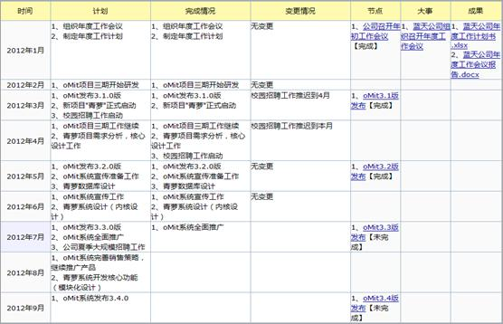
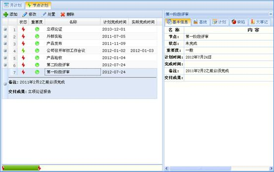

项目计划模块主要实现了对项目阶段性计划的梳理。项目计划的权限可分为项目计划操作权限和项目计划预览权限，在项目权限模块进行授权；当只给用户项目计划预览权限时，用户可以查看项目计划信息，拥有项目计划预览权限，且拥有项目计划操作权限的用户可以编辑项目计划信息。
月计划界面如下图计划所示，以下介绍月计划模块的功能。

图 月计划
1、编辑计划，完成情况，变更情况
用户可以直接编辑每月的计划、完成情况以及变更情况，保存后生效。
2、查看节点、大事、成果信息
用户可以直接查看每月对应的节点，大事及成果附件。点击可以查看/下载相应信息。
3、隐藏节点、大事、成果信息
用户在工具栏取消勾选节点、大事、成果，将隐藏相应的信息。
4、快速添加节点
在月计划标题“节点”中点击“+”可以打开节点添加界面，方便用户快速添加节点。
5、快速添加大事
在月计划标题“大事”中点击“+”可以打开大事添加界面，方便用户快速添加节点。
节点计划的主界面如下图所示：

图 节点计划界面
4.2.4.2.1 节点计划管理
1、添加节点
在项目列表中选择要添加节点的项目，在项目计划的节点计划列表中通过工具栏或右键菜单的 “添加”添加节点。
2、修改节点
在项目列表中选择要修改节点的项目，在项目计划的节点计划列表中通过工具栏或右键菜单的 “修改”修改节点。
3、处置节点
在项目列表中选择要处置节点的项目，在项目计划的节点计划列表中通过工具栏或右键菜单的 “处置”处置节点，可以改变节点状态、交付时间、交付成果。
4、删除节点
在项目列表中选择要删除节点对应的项目，在项目计划的节点计划列表中通过工具栏或右键菜单的“删除”删除节点。
4.2.4.2.2 节点信息
在节点计划列表中选择一个节点，可以在右侧查看节点信息以及该节点关联的基线、计划、缺陷和大事记信息。